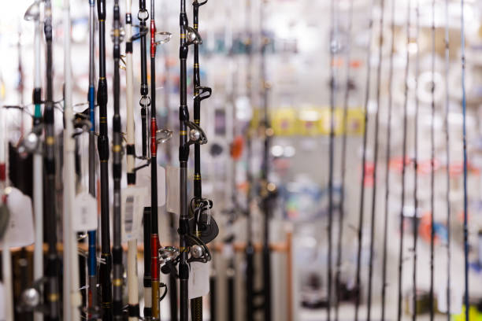
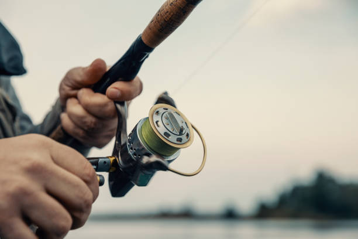
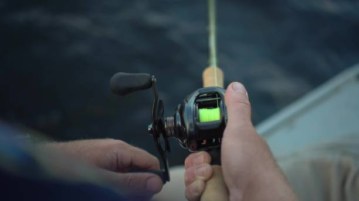
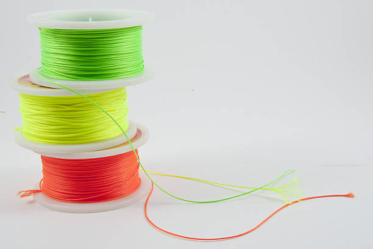
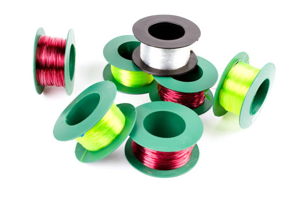

Sprzęt wędkarski
Wędki
Składa się z długiej, elastycznej rury wykonanej z różnych materiałów, takich jak bambus, włókno szklane, węglowe i kompozytowe.
Wędki różnią się między sobą długością, ciężarem wyrzutowym, wagą i wytrzymałością.
Następujące rodzaje wędek są najczęściej stosowane:
-Wędki spinningowe - służą do połowu ryb metodą spinningową.
-Wędki morskie - są specjalnie zaprojektowane do połowu ryb morskich, takich jak tuńczyk i marlin. Są to wędki bardzo wytrzymałe i twarde.
-Wędki gruntowe - służą do połowu z dna np. karpiów. Wędki te charakteryzują się dużym ciężarem wyrzutowym.
-Wędki feederowe - służą do połowu na feeder. Są to wędki gruntowe z delikatną szczytówką pokazującą branie.
-Wędki teleskopowe - są składane przez co łatwe w transporcie, nadają się do różnych rodzajów połowów.
-Wędki fly - służą do połowu metodą muchową.
Każdy rodzaj wędki jest specjalnie dostosowany do określonego rodzaju połowu i gatunku ryb.

Kołowrotki


Kołowrotek to urządzenie, które służy do magazynowania oraz kontrolowania żyłki podczas połowu.
Kołowrotek składa się z kilku głównych elementów: obudowy, rotoru, tłoka, korbki i szpuli.
-Obudowa: zewnętrzna część kołowrotka, która chroni jego wnętrze i pozwala na jego montaż na wędce.
-Rotor: część kołowrotka, która obraca się wokół osi i jest odpowiedzialna za zwijanie lub rozwijanie linki.
-Tłok: mechanizm, który pozwala na regulację siły hamowania i umożliwia precyzyjne dostosowanie prędkości zwijania liny.
-Korbka: część kołowrotka, która umożliwia ręczne zwijanie liny.
-Szpula: miejsce, w którym jest nawijana lina.
Żyłki oraz Plecionki
Żyłki i plecionki wędkarskie to nic innego jak linki, na których zawieszamy zestawy którymi łowimy ryby. Są one niezwykle ważne, ponieważ to właśnie na nich opiera się nasz sukces w wędkarstwie, jeśli linka puści ryba poprostu ucieknie. Istnieje kilka rodzajów linek, które różnią się między sobą głównie materiałem wykonania, grubością oraz wytrzymałością. Linki monofilamentowe - są najczęściej używanymi przez wędkarzy linkami. Są wykonane z jednej żyłki nylonowej i charakteryzują się dobrą elastycznością. Linki fluorocarbonowe - są nieco droższe od monofilamentów, ale cechują się większą wytrzymałością. Są niewidoczne pod wodą, co jest bardzo ważne podczas łowienia. Linki plecione - są wykonane z kilku żyłek wplatanych razem, dzięki czemu są bardziej wytrzymałe od pozostałych rodzajów linków. Są jednak mniej elastyczne i nieco trudniejsze w użyciu. Linki spinające - służą do spinania żyłek lub plecionek, aby zwiększyć ich wytrzymałość. Linki specjalistyczne - są stosowane w wędkarstwie specjalistycznym, takim jak na przykład wędkarstwo morskie. Mogą być wykonane z różnych materiałów i dostosowane do różnych rodzajów łowienia. Ostateczny wybór rodzaju linki zależy od indywidualnych potrzeb i preferencji wędkarza. Ważne jest, aby dobrać odpowiedni rodzaj linki do rodzaju wędkarstwa, jakie planujemy uprawiać oraz do wielkości i gatunku ryb, jakie chcemy łowić.


Sklepy wędkarskie
Cały ten sprzęt a także wiele wiele więcej trzeba gdzieś kupić. Jako iż sprzęt wędkarski nie jest potrzebny w życiu przeciętnego człowieka
nie występuje on w sklepach spożywczych bądź marketach. Sprzętu wędkarskiego zazwyczaj szukamy w specjalistycznych sklepach wędkarskich takich jak:
- www.fishingstore.pl
- pleciona.pl
- sklep.gorek-gliny.pl
- sklepwedkarski.pl
lub sklepach stacjonarnych.
Oczywiście to nie wszystkie sklepy internetowe, lecz są tu podane najpopularniejsze.
Da się jednak kupić ten sprzęt w takich sklepach jak Bricomarché lub Selgros, które nie są sklepami wędkarskimi.